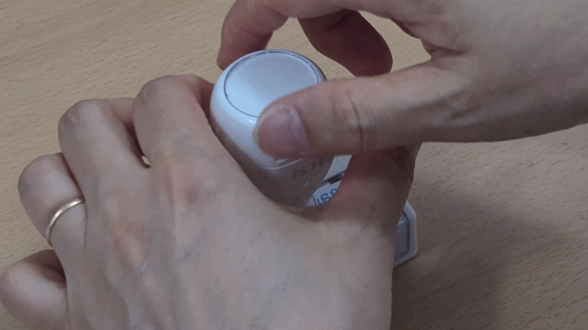

STAMPMALL
SELF INK REFILL GUIDE
스탬프몰 후면주입 리필 안내
STAMPMALL
후면주입 타입 선택
설명서에 표시된 고객님의 스탬프 타입을 선택해 주세요.
B TYPE | BACK INJECTION
B 타입 후면주입 리필 방법
스탬프 후면의 잉크 주입구에 천천히 잉크를 넣는 방식입니다. 설명서에 표시된 B, C, D 타입을 선택해 주세요.

GIF 영역
완성된 GIF 파일을 아래 파일명으로 넣으면 이 영역에 자동 표시됩니다.
assets/back-b-refill.gif